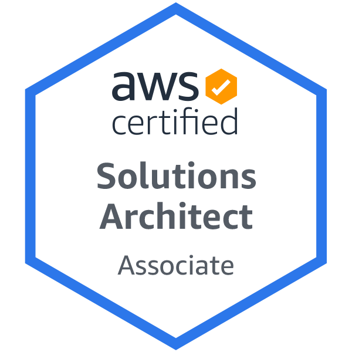
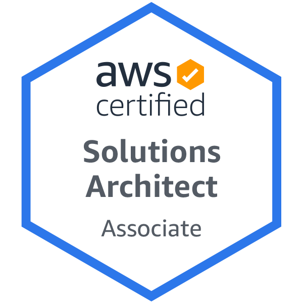
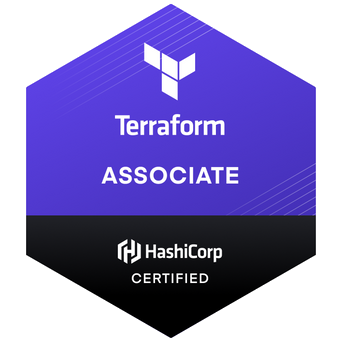
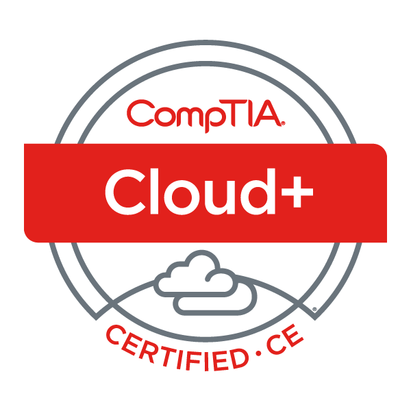
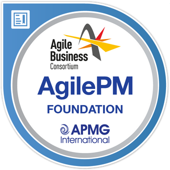
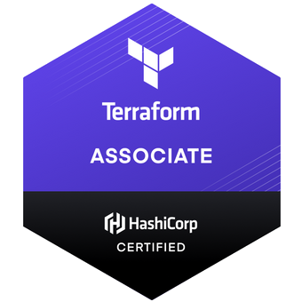
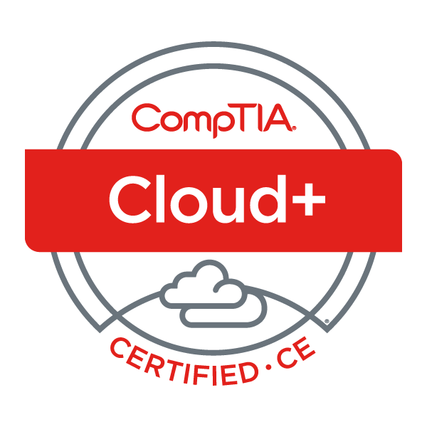
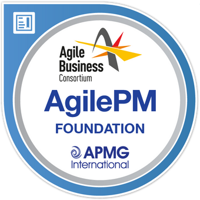

Wesley White's CV
Professional Profile
After nearly 10 years in the accounting profession I found a passion for technology born through learning about AWS and seeing just how much it can revolutionise business across all sectors. After studying it for over a year and using its various services I decided to make the change into tech. I am a keen problem solver and love getting stuck in to find the best solution for the client.
Professional Qualifications
 

 





Education
- Chesham Grammar School
- 3 A Levels including Maths at grade B
- 2012
- Amersham School
- 7 GCSE's A* - C
- 2010
Technical Skills
- Competent with Linux systems across Fedora, Arch and Debian based systems, confident in using the command line and have experience creating and running bash scripts
- Competent with HTML, CSS and JS and can build static webpages and host them on EC2, ECS, S3 and Cloudfront
- Experienced with both the AWS Console and the CLI to create cloud infrastructure, interact with services such as S3 and Route 53 and maintain my web servers with high availability using AWS S3 and Cloudfront
- Competent with Windows and can perform basic maintenance with command prompt and powershell, familar and experienced with Remote Desktop Connection
- Familiar with Git and have experience building a full CI/CD pipeline with AWS CodePipeline
- Competent in Python (including usage of the AWS SDK’s with AWS Lambda) and currently studying Go
- Experience using both Cloudformation and Terraform to create cloud infrastructure and build a web server
- Experience working with Docker containers and basic use of Docker compose files
Personal Skills
- Able to work individually or as part of a team to deliver the client requirements effectively
- Commited to providing the best solutions for the client
- Keen problem solver with an eye for detail
- Friendly and highly adaptable to the situation in hand
- I am a quick learner and always willing to try different approaches
Top 5 Achievements
- Black belt in Northern Shaolin Chin Wu Kung Fu
- 3rd Place in BCCMA National Championship for Kung Fu
- BCCMA National Championship Good Sportsman Award
- Participated in the Queen's Golden Jubilee Procession
- Successfully migrated the accounting function of an international call centre company to the cloud accounting package Xero across 7 countries and ran training for their UK and Phillipines operations
Career History
- Technical Architect
- 6point6 Limited
- March 2022 - Present
- Working in the public sector to help design and implement transformative services to increase efficiency and help the client adapt quickly to fast-moving requirements and aid in their transition away from their legacy platforms
- Working with multiple stakeholders across multiple fields including SecOps, DevOps, Developers and leadership and management teams
- Working internally to design, build and deploy a technical assessment platform which is hosted on AWS using Docker and RDS.
- Co-chair the green team to help the company achieve their goal of joining The Climate Pledge and being Net Zero carbon by 2040
- Cloud Accounting Specialist
- Hillier Hopkins LLP
- February 2017 - February 2022
- Oversaw the Sublime Bookkeeping sub-entity, building out the systems and processes to be able to support a growing service list and client requirements
- Oversaw all app advisory services within the firm, including moving clients from legacy desktop applications to cloud accounting software such as Xero
- Advised and trained both clients and staff members on new ways of working using automation at the core of the finance function to eliminate manual entry and therefore allow for greater accuracy and insights
- Developed and implemented the firm's response to the CBILS loan scheme as a result of the COVID pandemic to allow quick access to cash flow finance for our clients
- Trainee Accountant
- SJD Accountancy
- August 2014 - February 2017
- Developed and maintained a client base of 100+ clients as their primary contact for all of their accounting matters
- Designed and implemented an automatic IR35 calculation spreadsheet for those caught by IR35 regulations for easier processing
- Junior Accountant
- Thomas Cox & Co
- January 2013 - July 2014
- Reviewed and provided comment on a number of cloud accountancy platforms to identify those that had potential within the market that we should look to implement for our own clients
Interests and Hobbies
- In my spare time I am an avid follower of motorsport, including Formula 1, Formula E and Indycar amongst others
- I enjoy cooking in the evening and finding new recipes to try out
- I am always looking out for new FOSS software to experiment with and improve my usage of Linux
- I am always keen to try and build something new and make my own, from guitars to mechanical keyboards
References are available upon request
Download a copy